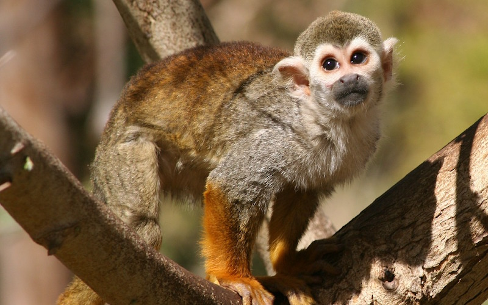

EL MONO ARDILLA
El mono ardilla tiene una longitud corporal de 26 a 36 cms y lega a pesar 1,100 grs. Su
pelaje es grueso , suave y de brillante colorido. La coloración más común es blanco
alrededor de los ojos y oídos y garganta y los lados del cuello, las patas , las manos son
rojizas o amarillas; tienen orejas parecidas a las de los humanos, la cola es un poco peluda
y no es prensil.
Su principal depredador manos quienes los capturamos para tráfico ilegal de animales
silvestres y en ocasiones venderlos como mascotas. También hemos ido alterando su
medio ambiente talando árboles y usando los bosque para cultivos y pastoreo.
}
 |